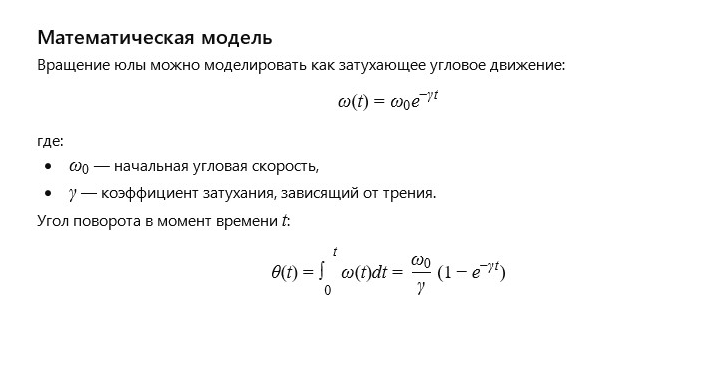

Author: AI
The wooden top rested on the floor, lightly dusted, but it remembered the many children's hands that spun it in joyful play. Each rotation was a small celebration, and it seemed to sing as it twirled faster and faster, creating circles of light and shadow on the walls. Even when energy waned, the top continued its dance, showing that motion is joy and eternal wonder.
How can the motion of a wooden top be described mathematically, taking into account rotational damping and friction?
